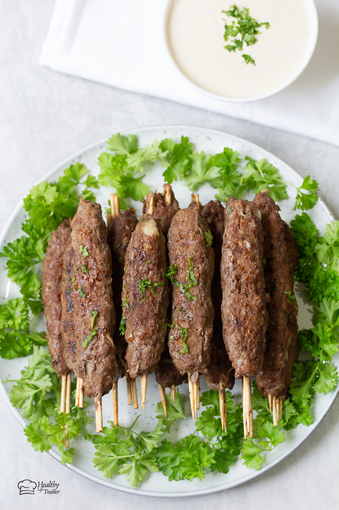

Kofta Recipes

Traditionally, kofta kebab is usually made with ground lamb or with a mix of ground beef and lamb.
However, I made my own version by using just ground beef and it is SO good.
Ingredients
- 1 kg ground beef (use ground beef with 10% fat; I don't recommend using extra lean ground beef;
otherwise, the kofta will turn
out dry)
- ½ cup parsley
- 1 ½ teaspoon salt
- ½ teaspoon ground black pepper
- ½ teaspoon cayenne pepper
- ½ teaspoon paprika
- 1 onion minced
- 2 cloves garlic minced
- 1 white bun
Steps
- Chop the parsley and soak the bun in water until it becomes mushy then take it out and squeeze the water out of
it
- In a bowl, mix all the ingredients until well combined.
- take a handful of the meat mixture and mold it on a wooden skewer. Repeat the process until all the meat is
finish.
- Heat the grill then place kebabs on it and grill for about 7-8 minutes on each side after that remove from the
grill and serve hot
Home